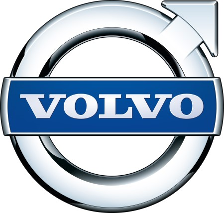

홈 > 브랜드 매거진 > 볼보
볼보
볼보(Volvo)는 1927년 스웨덴 예테보리에서 출발한 자동차 브랜드로, 승용차(볼보 자동차)와 상용차(볼보 그룹)로 분리돼 있다.
산업 분야 모빌리티 · 공개 등급 편집 검수 · 브랜드 평가 4.7 ★


한눈에 보는 브랜드
볼보 자동차(Volvo Cars)는 1927년 스웨덴 예테보리에서 설립된 프리미엄 자동차 제조사로, 베어링 기업 SKF의 영업이사 아사르 가브리엘손(Assar Gabrielsson)과 엔지니어 구스타프 라르손(Gustaf Larson)이 '스칸디나비아 도로에 견디는 튼튼한 차'를 목표로 함께 창업했다. 같은 해 4월 14일 첫 차 ÖV4(애칭 야콥)가 생산되며 역사가 시작됐다.
두 번의 큰 전환점으로 1999년 포드(Ford)에 인수됐고, 2010년 중국 지리(Geely)홀딩스로 다시 매각됐다. 2024년 76만여 대를 팔며 창립 후 최대 실적을 세운 글로벌 브랜드로 성장했다.
브랜드 관점
볼보의 핵심 차별점은 독일 프리미엄 3사와의 노선 차이다. 벤츠·BMW·아우디가 성능과 위세를 앞세운다면, 볼보는 1959년 3점식 안전벨트(엔지니어 닐스 보린 설계)를 발명하고 그 특허를 전 세계에 무상 공개한 일화에서 보듯 '안전'을 정체성의 중심에 둔다.
전동화에서도 앞섰다. 2024년 순수 전기차를 17만여 대 팔아 전년 대비 54% 늘렸고, 전기차 비중 23%로 레거시 프리미엄 브랜드 중 최고를 기록했다.
다만 2024년 회사는 2030년 100% 전기차 전환 목표를 90~100% 전동화(전기차+플러그인 하이브리드)로 완화했는데, 충전 인프라 지연과 보조금 축소, 관세 불확실성이 배경이다. 지리 인수는 자본과 중국 시장 접근을 주면서도 스웨덴 본사 중심의 독립 경영을 유지하는 구조다.
한국에서는 수입차 시장에서 꾸준한 인기를 누리며 2024년 EX30 같은 소형 전기 SUV로 가격대를 낮춰 대중성을 넓혔다.
시작과 성장
볼보의 출발은 1924년 가브리엘손과 라르손이 옛 친구로 재회해 스웨덴 독자 자동차를 만들자고 의기투합한 데서 비롯됐다. 두 사람은 베어링 기업 SKF의 지원을 받아 1927년 예테보리에서 SKF 자회사 형태로 회사를 세웠고, 가브리엘손이 경영을, 라르손이 기술을 맡았다.
거친 북유럽 도로에 견디는 견고함이 초기 설계 철학이었고, 이는 곧 '안전'이라는 브랜드 핵심으로 발전했다. 결정적 사건은 1959년이다.
엔지니어 닐스 보린이 3점식 안전벨트를 완성해 양산차에 처음 적용했고, 회사는 인명을 살리는 기술이라는 판단으로 그 특허를 모든 제조사에 무상 개방했다. 이 결정은 이후 전 세계에서 수많은 생명을 구한 것으로 평가된다.
소유 구조의 두 전환점도 역사를 갈랐다. 1999년 포드가 볼보 승용차 부문을 약 64억 5천만 달러에 인수했고(트럭·버스의 볼보그룹과는 이때 분리된 별개 회사로 운영), 2010년 포드가 다시 지리홀딩스에 약 18억 달러에 매각하며 현재의 모회사 체제가 됐다.
브랜드 아이덴티티
볼보의 브랜드 가치관은 '안전'과 스칸디나비아 디자인 철학으로 압축된다. 사람을 중심에 두는 안전 기술, 군더더기를 덜어낸 절제된 북유럽 미니멀리즘이 제품과 메시지 전반을 관통한다.
시각 정체성의 핵심은 원과 화살표가 결합된 '아이언 마크(iron mark)' 엠블럼으로, 철(鐵)과 강인함을 상징하는 고전적 기호를 현대적으로 다듬어 후드와 그릴에 사용한다. 타깃은 과시보다 실용·안전·지속가능성을 중시하는 가족 단위와 도시형 프리미엄 소비자다.
브랜드 보이스는 차분하고 신뢰감 있는 어조로, 자극적 수사보다 '사람을 지킨다'는 일관된 약속을 강조한다.
제품과 서비스
제품군은 SUV·세단·왜건·전기차로 구성되며 SUV가 중심축이다. 시그니처 모델로는 대형 SUV XC90, 베스트셀러 중형 SUV XC60, 소형 순수 전기 SUV EX30이 꼽히고, 차세대 전기 플래그십 EX90·ES90이 라인업에 합류하고 있다.
한국 시장 기준 가격대는 EX30이 약 3,991만 원대(코어 트림)부터 시작하며, EX30 크로스컨트리는 약 5,516만 원 수준이고, XC90·S90 등 상위 모델은 그 이상 고가대다. 유통은 공식 수입사를 통한 전시장·서비스망과 온라인 판매 채널을 병행한다.
현재 상태
본사는 스웨덴 예테보리(토슬란다)이며, 모회사는 중국 지리홀딩스다. 직원은 전 세계 약 4만여 명 규모다.
2024년 소매 판매는 76만 3천여 대로 사상 최대를 기록했고, 같은 해 매출은 회사 역사상 처음으로 4천억 크로나를 넘어섰다. 합작·관계사 제외 코어 영업이익은 약 270억 크로나로 영업이익률 6.8%를 기록했다.
순수 전기차 판매는 17만여 대(비중 23%)였다. 다만 회사는 2025년을 시장 여건 악화로 도전적인 해로 전망했다.
타임라인
BI/CI 변천사
함께 읽을 브랜드
 모빌리티 · 편집 검수아우디
모빌리티 · 편집 검수아우디아우디(Audi)는 독일 잉골슈타트에 본사를 둔 폭스바겐 그룹 산하 프리미엄 자동차 제조사이다.
BMW는 이동수단을 만드는 회사를 넘어, 주행 감각과 조형 언어를 함께 설계하는 디자인 브랜드다. BMW의 강점은 성능 수치만으로 설명되지 않는다. 운전자가 차를 보...
 모빌리티 · 자료 기반현대자동차
모빌리티 · 자료 기반현대자동차현대자동차(Hyundai Motor)는 한국을 대표하는 자동차 기업으로, 인터브랜드 2025 베스트 코리아 브랜드 2위(브랜드 가치 약 27.9조 원)에 올랐다.
 모빌리티 · 자료 기반제네시스
모빌리티 · 자료 기반제네시스제네시스(Genesis)는 현대자동차그룹이 2015년 출범시킨 럭셔리 자동차 브랜드다.
 모빌리티 · 매거진 완성할리데이비슨
모빌리티 · 매거진 완성할리데이비슨할리데이비슨은 모터사이클보다 자유와 소속감의 의식을 더 강하게 판매한다. 제품은 이동수단이지만 브랜드의 핵심은 엔진음, 라이딩 문화, 커뮤니티, 반항적 이미지가 결합...
 모빌리티 · 자료 기반기아
모빌리티 · 자료 기반기아기아(Kia)는 한국의 자동차 기업으로, 인터브랜드 2025 베스트 코리아 브랜드 3위(브랜드 가치 약 9.8조 원)에 올랐다.
 모빌리티 · 자료 기반메르세데스-벤츠
모빌리티 · 자료 기반메르세데스-벤츠메르세데스-벤츠(Mercedes-Benz)는 독일 슈투트가르트에 본사를 둔 프리미엄 자동차 브랜드이다.
 모빌리티 · 자료 기반현대모비스
모빌리티 · 자료 기반현대모비스현대모비스(Hyundai Mobis)는 현대자동차그룹의 자동차 부품 기업으로, 1977년 설립돼 2000년 현 사명이 됐다.